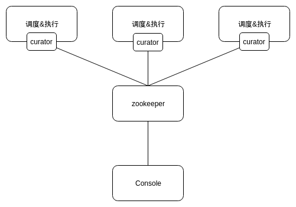
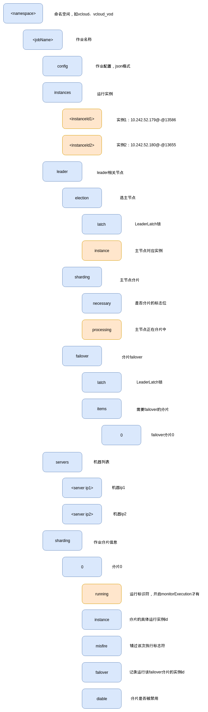
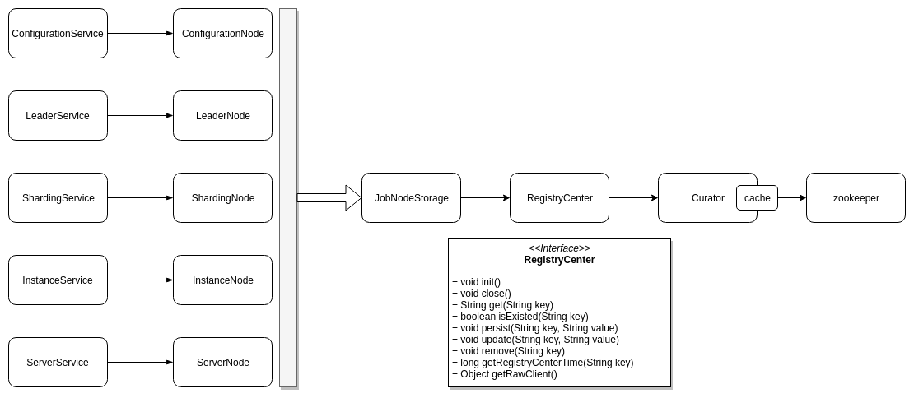
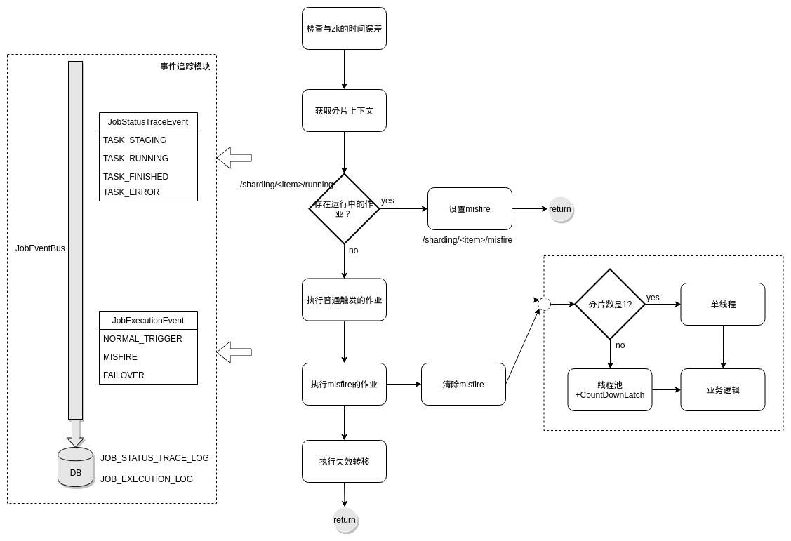
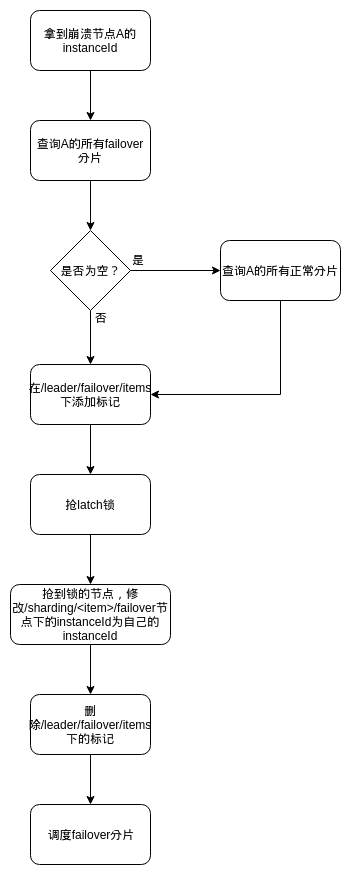
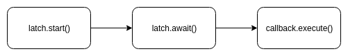

elastic-job架构分析
概览
elastic-job整体上采用去中心化调度的架构，调度和执行存在于同一节点上，使用zookeeper作为注册中心进行节点的分布式协调。zookeeper中存储了每个作业的配置信息、机器节点信息、分片信息等；每个节点通过apache curator与zk通信，调度能力依然由quartz提供。此外，elastic-job提供了console管理界面，console与各执行节点无任何交互，可以理解为一个zk client，拉取zk节点中的作业状态等并进行展示。

elastic-job的部署十分简单，console由springboot开启，各机器节点引入elastic-job-lite-core.jar和elastic-job-lite-spring.jar包即可。
zk节点管理
下图是elastic-job的zk目录结构（黄色是临时节点，蓝色是持久化的目录或节点）：

下图是elastic-job与zk通信和节点操作时涉及到的主要类的简单关系图。左边的五个Node节点类对应zk的目录节点，上层通过相应的Service类进行管理；RegistryCenter封装了与zk的交互操作，通过Curator实现通信（TreeCache缓存）。

注册&发现
新节点加入时，elastic-job会把自己的ip和进程号主动写入zk的/
此外，elastic-job有RegistryCenterConnectionStateListener线程监听与zk的连接状态，当连接丢失时会调用scheduler.pauseAll()方法暂停所有job。为什么这样做？如果不这样做，节点A在下一个调度时刻到来时执行作业，而此时zk发现节点A失去连接，可能会对作业重新分片，节点A的分片被分配到了其它节点调度执行，造成重复执行，所以实质上这是一个处理节点脑裂的措施。
当监听线程感知到zk重新连接了，会调用scheduler.resume()方法恢复调度。因此，如果zk挂掉，所有作业会暂停调度（不是暂停执行，正在执行的作业不会受影响，所以还是有可能重复执行），zk恢复后作业会重新恢复调度。
调度&执行
elastic-job中的JobScheduleController代理了quartz scheduler，调度能力由quartz提供。
下面详细说明一下作业的执行过程。

在调度周期到达时，首先校验本机与zk的时间误差是否在允许范围内，差值大于设定值maxTimeDiffSeconds会抛出异常。
接着获取作业分片上下文，由于分片是由主节点负责分配的，所以如果此时发生选主，获取分片上下文操作会一直阻塞直到选主完成。
接下来，根据zk中running节点是否存在判断当前是否有尚在运行中的作业，如果有，说明上次调度的作业仍未运行完成，发生了阻塞，这时会在zk中创建misfire节点，标识当前分片因阻塞而未被执行，等待下次调度执行。
如果不存在尚在运行中的作业，那么执行作业逻辑。这里会根据作业分片数量是否为1来做不同的处理：如果只有1个分片，则使用单线程执行业务代码；如果多于1个分片，则使用线程池，并等待所有分片全部执行完后再统一返回。
由于上次调度过程中可能有分片由于阻塞而未被执行，这次调度一并执行这些分片，并清楚misfire节点，标识misfire分片已被执行完毕。
最后，如果设置了failover，则会执行失效转移逻辑（后面详细说明）。
在整个作业执行的过程中，elastic-job对作业的状态、执行情况做了事件追踪。事件总线JobEventBus中注册了两种事件，分别是JobStatusTraceEvent和JobExecutionEvent，分别对应作业状态和触发来源。elastic-job会在作业执行过程中向事件总线实时发送事件追踪信息，JobEventBus接收追踪信息后会写入DB。
作业幂等
elastic-job可保证作业幂等，需要在LiteJobConfiguration中设置monitorExecution=true开启。下面看一下作业幂等是如何实现的。
作业的执行需要以下步骤：
|
|
其中，process()会执行到作业的具体业务代码。registerJobBegin方法中，首先elastic-job更新内存中的作业状态为running，然后判断是否开启了monitorExecution，如果开启，就会向zk写入running临时节点，全局标示作业正在执行中。registerJobCompleted会在执行结束后，删除running节点，标示作业未在执行中。
|
|
临时节点running起到了分布式锁的作用，其它节点发现running就不会执行作业。
但是，实现作业幂等是以与zk的频繁交互为代价的，如果作业的触发周期很短（如每5秒一触发）会造成running节点的频繁添加和删除，可能对性能影响较大，因此，monitorExecution不适合在短时间触发的作业中使用。
失效转移
当作业节点执行作业异常崩溃时，其所分配的作业分片项在下次重新分片之前不会被重新执行。开启失效转移功能后，这部分作业分片项将被其他作业节点抓取后“执行”。
所有节点会有JobCrashedJobListener监听器，监听同作业下，是否存在其它机器节点崩溃的情况。如何做到？zk中instances节点下记录了作业集群下的所有执行实例，如果某实例崩溃，zk会删除这个节点，其它节点通过监听是否有删除动作来判断节点是否崩溃。
实际上，这样会把正常退出集群的节点视为崩溃进行处理。
下面是失效转移的流程图：

主节点
主节点是作业维度的概念，例如集群有三个节点 １、２、３，存在两个作业 a、b，可能 a 作业的主节点是 ３，b 作业的主节点是 １。
elastic-job的选主过程使用了curator的LeaderLatch分布式锁。使用一个zk节点路径创建一个LeaderLatch，start() 后，调用 await() 等待拿到这把锁。如果有多个线程执行了相同节点路径的 LeaderLatch 的 await() 后，同一时刻有且仅有一个线程可以继续执行，其他线程需要等待。当该线程释放( LeaderLatch.close() )后，下一个线程可以拿到该锁继续执行。

拿到锁成为主节点后执行回调，回调操作中，首先判断znode中是否已有/leader/election/instance节点，如果没有则把自己的instanceId写入instance节点，标志主节点选举完成。
注意：主节点并不一定是作业的执行节点。
在主节点执行的操作有：分配作业分片项、调解分布式作业不一致状态。
dump服务
由于elastic-job是分布式架构，出现问题不易调试，为此提供了dump服务，打印调试信息。
当作业本地 TreeCache缓存和zk数据不一致时，dump出[zkPath, zkValue, treeCachePath, treeCacheValue]。当相同时，只需 dump出[zkPath, zkValue]，方便看出本地和注册中心是否存在数据差异。
除此之外，elastic-job留出接口，可以根据需求自定义调试命令。
overwrite的bug: https://github.com/elasticjob/elastic-job-lite/issues/469